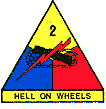

DURING The breakthrough operation from 26 - 31 July, 1944, the Division was constituted as follows:
The 2nd ARMORED DIVISION WAS COMMANDED BY MAJOR GENERAL EDWARD H. BROOKS
Combat Command "A": Commanded by Brigadier General Maurice Rose: Headquarters Combat Command "A", 66th Armored Regiment, 22nd Regimental Combat Team w/normal attachments. 14th Armored Field Artillery Battalion, Companies A, C, Detachment Company E, 17th Armored Engineer Battalion, 702 Tank Destroyer Battalion (SP) (less Company "B"), Company "A", 48th Armored Medical Battalion, Detachment Maintenance Battalion, Battery "D", 195th AAA (AW) Battalion (SP).
Combat Command "B": Commanded by Brigadier General I.D. White, Headquarters Combat Command "B", 67th Armored Regiment (less 3rd Battalion), 1st and 3rd Battalions, 41st Armored Infantry Regiment, 78th Armored Field Artillery Battalion, Company "B", Detachment Company "E", 17th Armored Engineer Battalion, Company "B" , 702 Tank Destroyer Battalion, Company "B", 48th Armored Medical Battalion, Battery "A", 195th AAA (AW) Battalion (SP), 502nd CIC Det. (2 Officers, 14 enlisted Men)
Division Reserve: 41st Armored Infantry Regiment (-1st and 3rd Bns.) (- l Company), 3rd Battalion, 67th Armored Regiment.
Division Control: Headquarters and Headquarters Company: 2nd Armored Division (with 1 Company, 41st Armored Infantry Division attached plus 3 sections, Battery "C", 195th AAA (AW) Battalion (SP), 142nd Armored Signal Company, 82nd Armored Reconnaissance Battalion (Plus Company "D", 17th Armored Engineer Battalion), 24th Reconnaissance Squadron, Mechanized (-1 Troop), Division Trains (plus Battery "B", 195th AAA (AW) Bn. (SP), Headquarters 195th AAA (AW) Battalion (SP), 17th Armored Engineer Battalion (less 5 companies).
Division Artillery: Headquarters 2nd Armored Division, Division Artillery, 62nd, 65th, 92nd, Field Artillery Battalions, Battery "C", 195th AAA (AW) Bn. (SP) (less 3 sections), Batteries "C" and "D". 129th AAA G. Battalion (90 mm).